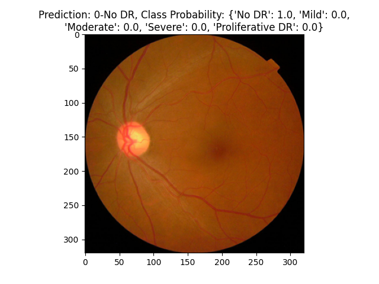

Patient: Confidential
ID: 05339950962e
Gender: F
Age: 43
Patients' Eye Scan:
Diagnosis: No DR
SLIC Segmentation for Ophthalmologists:
Simple Linear Iterative Clustering (SLIC) segmentation is used in our diabetic retinopathy detection tool to enhance the precision
of identifying key retinal features. For ophthalmologists, who are the primary stakeholders of this technology, SLIC provides a
visual representation of superpixels, aiding in the detection of lesions and hemorrhages critical for diagnosis. The contribution of
each segment in a model's prediction is determined by measuring the impact of altering or removing that segment on the model's output,
often quantified using methods like feature importance scores or sensitivity analysis. It serves as a
bridge between raw AI output and clinical decision-making, offering a transparent view into the model's functioning, thereby
bolstering confidence in the AI's diagnostic support.